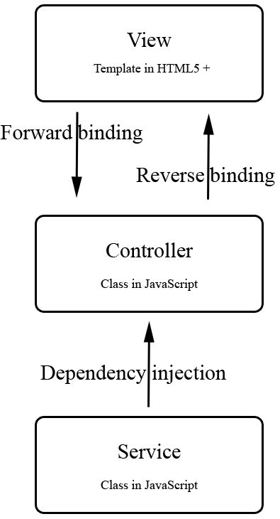
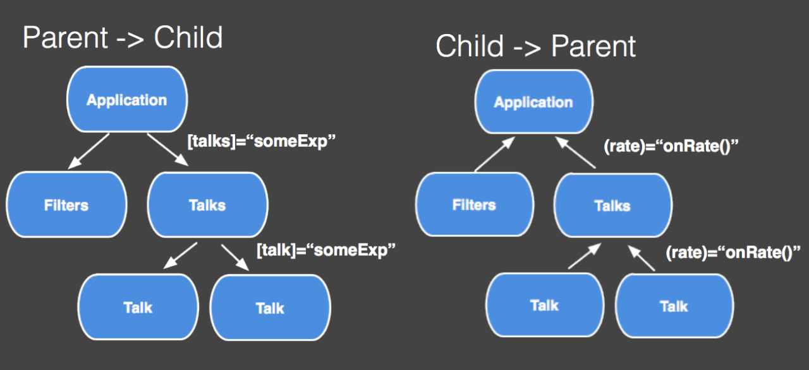

ngular2
Bleeding edge
Application development
withWeb technologies
Presented by Jørn Are Hatlelid / @jornare Principal Engineer @ Computas, Web Application developer
Overview
We will
Review some history
Talk some theory
Build a small app
Some History & Background
1991 Static HTML - Tim Berners Lee @CERN
1994 W3C @ MIT, CSS - Håkon Wium Lie
1995 JavaScript - Brendan Eich (10 days)
1996 CSS in IE3 & Netscape
1996 My first webpage
1998 ECMAScript 1 & 2
1999 ECMAScript 3, XHTMLHTTP
2002 Web 2.0
2006 jQuery - cross browser
2009 ECMAScript 5 (HTML5) & Angular 1.0 & PhoneGap & NodeJS
2010 KnockoutJS - Steve Sanderson (MS)
2011 CSS 2.1
2012 TypeScript (MS), MeteorJS
2013 React (Facebook)
2015 ECMAScript 6/2015 (June)
2016 ECMAScript 2016 & Angular 2.0
From web to web applications to
applications with web technologies
HTML = Reading & Form submission
HTML + CSS = Pretty reading & forms
HTML + CSS + JS = UX, less page refresh
ES2015+ + HTML + CSS = Application
Compile & bundle for web and/or devices
ES2015 JavaScript goes serious
Classes
Modules
Extend & Inherit
Block scoping (let)
Arrow functions
Promises
Generators
Template strings
ES2016+ takes it further
Decorators
Async / Await
Observables
Exponential operator (**)
SIMD & Primitives
TypeScript helps you
On top of JavaScript
Compiles to ESx
Provides types, decorators & code complete
Will probably die...
So what is Angular2?
NOT Angular1 + 1
A JavaScript framework
Less code
Testable code
Good practices & patterns
Build apps with great user experience
Deploy everywhere (web, phone, desktop, watch)
Modules & Module loaders
- Similar to nodejs modules, but for the client
- ECMAScript 2015(ES6)
- Several standards
- Scoping, encapsulation
- Prevent "bleeding"
- Bundle into packages and/or lazy load
- Code completion
Similar to nodejs modules, but for the client
Every file gets its own scope
Functionality needs to be exported to be used outside the file
Using a module
Referenced by path (or mapped in configuration)
System.js is popular
imports are native in ES2015+ and TypeScript
import {Component} from 'angular2/angular2';
Code completion with typing files (.d.ts), can be used in ESx
Core concepts
- Component
- View & Template
- Class
- Bootstrap
- Service
Concepts overview

Forward binding with events
Reverse binding automagically
Services often used to share data and talk to server
Data binding flow
Bind both ways with [(ng-model)]="expression"
Component
An app is a tree-structure of components
host
View & Template
templateUrl
Class
implements, extends
Bootstrap
Service
Functionality without a graphical equivalent
Normally available as singletons with dependency injection
Template Syntax
Local variables
{{ Binding }}
#my-value vs myValue
(Event)="Statement"
Events are pushers of change
click, dblclick
keydown, keyup
mouseover, mouseenter, mouseleave
[Property]="Expression"
Properties are reactive listeners
src, href, visible, hidden, style, class, class={'name':'condition'}
*directivetemplate="Expression"
The star lets you void writing the template element
is the same as
Native Directives
A directive is a custom element, attribute or class that modifies existing content rather than providing its own.
Or: A component with no template
Directives must be imported and listed in @View
We can "cheat" with native directives
CORE_DIRECTIVES, FORM_DIRECTIVES, ROUTER_DIRECTIVES
In ES5 we prefix with ng to get access (ng.CORE_DIRECTIVES)
ng-if, ng-for, ng-switch, ng-switch-when, ng-model
*ng-for="#item of items"
Iterate over a list
*ng-if="condition"
Render content on condition (removes/adds to DOM)
Forms
Control
Controls behaviour of all form elements, created by default.
Validators
Add validators to the Control to control validation
Bind it by name
valid, invalid, pristine, dirty
Custom validators
Import and use
Control group and array
Routing
Navigate our app without refreshing the full page
We need a component that reacts to routes
And a template with the router-outlet component
HTTP
Talking to the/a server
Creating an app with TypeScript
Add Bootstrap css
Steal a Bootstrap template
Make a data component
Refactor it to a service